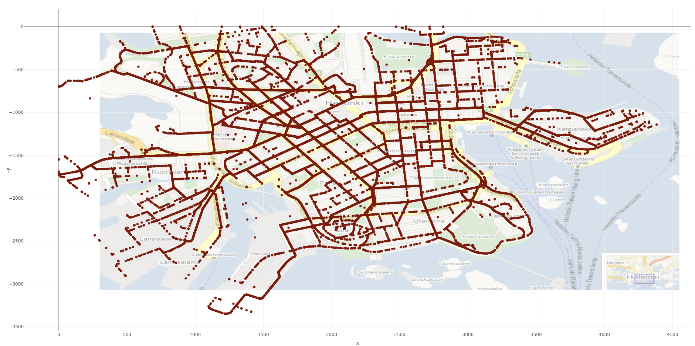

In my final year at univeristy I performed an investigation around the effect of different opporunitistic networking protocols while undergoing a cycber security attack. This expanded knowledge I built during my third year. Upon completion this was published in the Journal of Sensor and Actuator Networks. The investigation was performed on the ONE simulatior which allowed a wide range of simulations to be run. They consisted of different forms of cyber attack with different protocols and ratio of attacking vehicles to oridinary ones. Once the experiments had been completed, analysis was performed using both traditional graphing mechanisms as well as geospatial images to demonstrate the location at specific time intervals.
The increased interest in autonomous vehicles has led to the development of novel networking protocols in VANETs In such a widespread safety-critical application, security is paramount to the implementation of the networks. We view new autonomous vehicle edge networks as opportunistic networks that bridge the gap between fully distributed vehicular networks based on short-range vehicle-to-vehicle communication and cellular-based infrastructure for centralized solutions. Experiments are conducted using opportunistic networking protocols to provide data to autonomous trams and buses in a smart city. Attacking vehicles enter the city aiming to disrupt the network to cause harm to the general public. In the experiments the number of vehicles and the attack length is altered to investigate the impact on the network and vehicles. Considering different measures of success as well as computation expense, measurements are taken from all nodes in the network across different lengths of attack. The data gathered from each node allow exploration into how different attacks impact metrics including the delivery probability of a message, the time taken to deliver and the computation expense to each node. The novel multidimensional analysis including geospatial elements provides evidence that the state-of-the-art MaxProp algorithm outperforms the benchmark as well as other, more complex routing protocols in most of the categories. Upon the introduction of attacking nodes however, PRoPHET provides the most reliable delivery probability when under attack. Two different attack methods (black and grey holes) are used to disrupt the flow of messages throughout the network and the more basic protocols show that they are less consistent. In some metrics, the PRoPHET algorithm performs better when under attack due to the benefit of reduced network traffic.